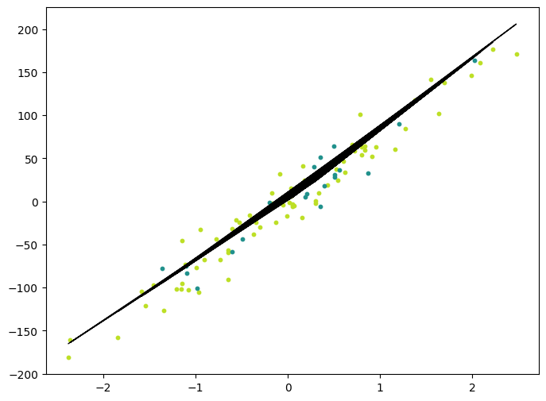

import numpy as np
np.random.seed(42)
import matplotlib.pyplot as plt
import torch
from sklearn import datasets
from sklearn.model_selection import train_test_split
from matplotlib.colors import ListedColormap
import collections
from sklearn.datasets import make_blobs
from time import perf_counter- The goal of this is to practice building basic ML algorithms from scratch in numpy/PyTorch. I use Machine Learning from Scratch series as a starting point, generally watching the first part of the video to review the setup, then building the algorithms out myself, looking at the repo for test cases/if stuck.
KNN
- Predict the class based on the most common class among the k nearest neighbors
- fit: doesn’t actually “train” the model in a traditional sense, just stores the training data.
- predict: for each point, find k nearest neighbors, then find most common class among these.
class KNN:
def __init__(self,k=3):
self.k = k
def _dist(self,x1,x2):
return np.sqrt(np.sum((x1-x2)**2))
def fit(self,X,y):
self.X_train = X
self.y_train = y
def _predict(self,x,debug=False):
dists=np.array([self._dist(x,x_train) for x_train in self.X_train])
sorted_indices = np.argsort(dists)[:self.k]
labels = [self.y_train[i] for i in sorted_indices]
most_common_labels = collections.Counter(labels).most_common(1)[0][0]
if debug:
print("ORIGINAL: ",dists)
print("LABELS: ",labels)
print("MOST COMMON LABEL: ", most_common_labels)
return most_common_labels
def predict(self,X,debug):
# X can have multiple samples, so predict for each one
out = np.array([self._predict(x,debug) for x in X])
if debug: print(out)
return out
iris = datasets.load_iris()
X,y = iris.data, iris.target
X_train, X_test, y_train, y_test = train_test_split(X,y,test_size=0.2,random_state=42)
def accuracy(y_true,y_pred):
return np.sum(y_true==y_pred)/len(y_true)
k = 3
clf = KNN(k)
clf.fit(X_train,y_train)
predictions = clf.predict(X_test,debug=False)
print("Accuracy: ", accuracy(y_test,predictions))Accuracy: 1.0- First implement a naive implementation by directly converting numpy arrays to torch.tensors and replacing numpy functions with PyTorch functions.
class KNNTorchNaive:
def __init__(self,k=3):
self.k = k
def _dist(self,x1,x2):
return torch.sqrt(torch.sum((x1-x2)**2))
def fit(self,X,y):
self.X_train = X
self.y_train = y
def _predict(self,x,debug=False):
dists=torch.tensor([self._dist(x,x_train) for x_train in self.X_train])
sorted_indices = torch.argsort(dists)[:self.k]
labels = [self.y_train[i] for i in sorted_indices]
most_common_labels = collections.Counter(labels).most_common(1)[0][0]
if debug:
print("ORIGINAL: ",dists)
print("LABELS: ",labels)
print("MOST COMMON LABEL: ", most_common_labels)
return most_common_labels
def predict(self,X,debug):
# X can have multiple samples, so predict for each one
out = torch.tensor([self._predict(x,debug) for x in X])
if debug: print(out)
return outk = 3
X = torch.from_numpy(X).float()
y = torch.from_numpy(y).long()
X_train, X_test, y_train, y_test = train_test_split(X,y,test_size=0.2, random_state=42)
def accuracy(y_true,y_pred): return torch.sum(y_true==y_pred).item()/len(y_true)
clf = KNNTorchNaive(k)
clf.fit(X_train,y_train)
predictions = clf.predict(X_test,debug=False)
print("Accuracy: ", accuracy(y_test,predictions))Accuracy: 1.0X_train.shapetorch.Size([120, 4])class KNNTorchBroadcast:
def __init__(self,k=3):
self.k = k
def fit(self,X,y):
self.X_train = X
self.y_train = y
def _predict(self,x,debug=False):
#print(x.shape)
dists = torch.sqrt(torch.sum((self.X_train-x)**2,dim=1))
sorted_indices = torch.argsort(dists)[:self.k]
labels = [self.y_train[i] for i in sorted_indices] #could perhaps be optimized, but trying to keep this consistent with collections.Counter
most_common_labels = collections.Counter(labels).most_common(1)[0][0]
if debug:
print("ORIGINAL: ",dists)
print("LABELS: ",labels)
print("MOST COMMON LABEL: ", most_common_labels)
return most_common_labels
def predict(self,X,debug):
# X can have multiple samples, so predict for each one
out = torch.tensor([self._predict(x,debug) for x in X])
if debug: print(out)
return out- Broadcasting in PyTorch follows these rules:
If the two tensors differ in the number of dimensions, the shape of the tensor with fewer dimensions is padded with ones on its leading (left) side.
If the shape of the two tensors does not match in any dimension, the tensor with shape equal to 1 in that dimension is stretched to match the other shape.
If in any dimension the sizes disagree and neither is equal to 1, an error is raised.
- We subtract tensor
xof shape[4]from a tensorself.X_trainof shape[120, 4], PyTorch automatically broadcastsxto the shape ofself.X_trainby repeating it along the 0th dimension.- In the dists calculation, the tensors differ in number of dimensions, so
xis padded on the left with 1, becoming[1,4]according to Rule 1. Then by Rule 2, this resulting tensor is “stretched out” along 0th dimension from shape[1,4]to[120,4].
- In the dists calculation, the tensors differ in number of dimensions, so
def accuracy(y_true,y_pred): return torch.sum(y_true==y_pred).item()/len(y_true)
clf = KNNTorchBroadcast(k)
clf.fit(X_train,y_train)
predictions = clf.predict(X_test,debug=False)
print("Accuracy: ", accuracy(y_test,predictions))Accuracy: 1.0K-Means Clustering
- Cluster an unlabeled data set into K clusters.
- Initialize cluster centroids randomly
- Repeat until convergence
- Update cluster labels, assigning points to nearest cluster centroid
- Update cluster centroids, setting them to the mean of each cluster
class KMeans:
def __init__(self, K, max_iters, plot_steps):
self.K = K
self.max_iters = max_iters
self.plot_steps = plot_steps
# list of lists of indices for each cluster
self.clusters = [[] for _ in range(self.K)]
# mean feature vector for each cluster
self.centroids = []
self.tol = 1e-20
def _dist(self,x1,x2):
return np.sqrt(np.sum((x1-x2)**2))
# just need predict since unsupervised with no labels
def predict(self,X,debug=False):
self.X = X #just need for plotting
self.n_samples, self.n_features = X.shape
# initialize cluster centroids randomly
self.centroids =[self.X[idx] for idx in np.random.choice(self.n_samples, size=self.K, replace=False)]
if debug: print('init centroids: ', self.centroids); print('init clusters: ',self.clusters)
for it in range(self.max_iters):
# Re-initialize the clusters since else will keep appending to old ones!!! (IMPORTANT)
self.clusters = [[] for _ in range(self.K)]
old_centroids = np.copy(self.centroids) #else will point to self.centroids even when those are re-initialized! (IMPORTANT)
# Update cluster labels, assigning points to nearest cluster centroid
for i in range(self.n_samples):
cluster_idx = np.argmin([self._dist(self.X[i,:],centroid) for centroid in self.centroids])
self.clusters[cluster_idx].append(i)
# Update cluster centroids, setting them to the mean of each cluster
for i,cluster in enumerate(self.clusters):
self.centroids[i] = np.mean([self.X[idx] for idx in cluster], axis = 0)
if debug: print('centroids: ', self.centroids); print('clusters: ',self.clusters)
if np.all([self._dist(old_centroids[i], self.centroids[i]) < self.tol for i in range(self.K)]):
print(f'converged in {it} iterations, breaking'); break
def plot(self):
"""From https://github.com/patrickloeber/MLfromscratch/blob/master/mlfromscratch/kmeans.py"""
fig, ax = plt.subplots(figsize=(12, 8))
for i, index in enumerate(self.clusters):
point = self.X[index].T
ax.scatter(*point)
for point in self.centroids:
ax.scatter(*point, marker="x", color="black", linewidth=2)
plt.show()start_time=perf_counter()
X, y = make_blobs(
centers=3, n_samples=5000, n_features=2, shuffle=True, random_state=40
)
print(X.shape)
clusters = len(np.unique(y))
print(clusters)
k = KMeans(K=clusters, max_iters=150, plot_steps=True)
y_pred = k.predict(X,debug = False)
end_time = perf_counter()
print(f"Time taken: {end_time-start_time}")
k.plot()(5000, 2)
3
converged in 8 iterations, breaking
Time taken: 0.36868009900172183class KMeansVectDist:
def __init__(self, K, max_iters, plot_steps):
self.K = K
self.max_iters = max_iters
self.plot_steps = plot_steps
self.clusters = [[] for _ in range(self.K)]
self.centroids = []
self.tol = 1e-20
def predict(self, X, debug=False):
self.X = X
self.n_samples, self.n_features = X.shape
self.centroids = self.X[np.random.choice(self.n_samples, size=self.K, replace=False)]
for it in range(self.max_iters):
self.clusters = [[] for _ in range(self.K)]
old_centroids = np.copy(self.centroids)
distances = np.sqrt(((self.X - self.centroids[:, np.newaxis])**2).sum(axis=2))
closest_clusters = np.argmin(distances, axis=0)
for i in range(self.n_samples):
self.clusters[closest_clusters[i]].append(i)
for i, cluster in enumerate(self.clusters):
self.centroids[i] = self.X[cluster].mean(axis=0)
if np.all(np.sqrt(np.sum((old_centroids - self.centroids) ** 2, axis=1)) < self.tol):
print(f'converged in {it} iterations, breaking')
break
def plot(self):
"""From https://github.com/patrickloeber/MLfromscratch/blob/master/mlfromscratch/kmeans.py"""
fig, ax = plt.subplots(figsize=(12, 8))
for i, index in enumerate(self.clusters):
point = self.X[index].T
ax.scatter(*point)
for point in self.centroids:
ax.scatter(*point, marker="x", color="black", linewidth=2)
plt.show()start_time=perf_counter()
X, y = make_blobs(
centers=3, n_samples=5000, n_features=2, shuffle=True, random_state=40
)
print(X.shape)
clusters = len(np.unique(y))
print(clusters)
k = KMeansVectDist(K=clusters, max_iters=150, plot_steps=True)
y_pred = k.predict(X,debug = False)
end_time = perf_counter()
print(f"Time taken: {end_time-start_time}")
k.plot()(5000, 2)
3
converged in 7 iterations, breaking
Time taken: 0.0077601640005013905
torch.tensor()vstorch.stack(): Thetorch.tensor()function is used to create a new tensor, whiletorch.stack()is used to concatenate a sequence of tensors along a new dimension.In our case,
[torch.mean(self.X[cluster], axis=0) for cluster in self.clusters]is a list of tensors. Each tensor is the mean of the data points in a cluster.If we use
torch.tensor()on this list, it will try to create a new tensor that contains these tensors, which is not allowed because all elements within a tensor must be of the same type and tensors cannot contain other tensors.On the other hand,
torch.stack()takes this list of tensors and concatenates them along a new dimension to create a single tensor. This is whytorch.stack()is used in this case.In short,
torch.stack()is used to combine existing tensors into a larger tensor, whiletorch.tensor()is used to create a new tensor.
class KMeansTorchNaive:
def __init__(self, K, max_iters, plot_steps):
self.K = K
self.max_iters = max_iters
self.plot_steps = plot_steps
# list of lists of indices for each cluster
self.clusters = [[] for _ in range(self.K)]
# mean feature vector for each cluster
self.centroids = []
self.tol = 1e-20
def _dist(self,x1,x2):
return torch.sqrt(torch.sum((x1-x2)**2))
# just need predict since unsupervised with no labels
def predict(self,X,debug=False):
self.X = X #just need for plotting
self.n_samples, self.n_features = X.shape
# initialize cluster centroids randomly
#self.centroids =[self.X[idx] for idx in torch.random.choice(self.n_samples, size=self.K, replace=False)]
self.centroids = self.X[torch.randperm(self.n_samples)[:self.K]]
if debug: print('init centroids: ', self.centroids); print('init clusters: ',self.clusters)
for it in range(self.max_iters):
# Re-initialize the clusters since else will keep appending to old ones!!! (IMPORTANT)
self.clusters = [[] for _ in range(self.K)]
old_centroids = self.centroids.clone()
# Update cluster labels, assigning points to nearest cluster centroid
for i in range(self.n_samples):
cluster_idx = torch.argmin(torch.tensor(torch.tensor([self._dist(self.X[i,:],centroid) for centroid in self.centroids])))
self.clusters[cluster_idx].append(i)
# Update cluster centroids, setting them to the mean of each cluster
# for i,cluster in enumerate(self.clusters):
# self.centroids[i] = torch.mean(torch.tensor([self.X[idx] for idx in cluster]))
self.centroids = torch.stack([torch.mean(self.X[cluster], axis=0) for cluster in self.clusters])
if debug: print('centroids: ', self.centroids); print('clusters: ',self.clusters)
if torch.all(torch.sqrt(torch.sum((self.centroids-old_centroids)**2,dim=1)) < self.tol):
#if np.all([self._dist(old_centroids[i], self.centroids[i]) < self.tol for i in range(self.K)]):
print(f'converged in {it} iterations, breaking'); break
# if torch.all([self._dist(old_centroids[i], self.centroids[i]) < self.tol for i in range(self.K)]):
# print(f'converged in {it} iterations, breaking'); break
def plot(self):
"""From https://github.com/patrickloeber/MLfromscratch/blob/master/mlfromscratch/kmeans.py"""
fig, ax = plt.subplots(figsize=(12, 8))
for i, index in enumerate(self.clusters):
point = self.X[index].T
ax.scatter(*point)
for point in self.centroids:
ax.scatter(*point, marker="x", color="black", linewidth=2)
plt.show()start_time = perf_counter()
X, y = make_blobs(
centers=3, n_samples=5000, n_features=2, shuffle=True, random_state=40
)
X, y = torch.tensor(X), torch.tensor(y)
print(X.shape)
clusters = len(np.unique(y))
print(clusters)
k = KMeansTorchNaive(K=clusters, max_iters=150, plot_steps=True)
y_pred = k.predict(X,debug = False)
end_time = perf_counter()
print(f"Time taken: {end_time-start_time}")
k.plot()torch.Size([5000, 2])
3/tmp/ipykernel_8198/1886197135.py:29: UserWarning: To copy construct from a tensor, it is recommended to use sourceTensor.clone().detach() or sourceTensor.clone().detach().requires_grad_(True), rather than torch.tensor(sourceTensor).
cluster_idx = torch.argmin(torch.tensor(torch.tensor([self._dist(self.X[i,:],centroid) for centroid in self.centroids])))converged in 5 iterations, breaking
Time taken: 0.8377222439994512
- OK, naive PyTorch implementation took a bit longer than basic numpy implementation.
class KMeansTorch:
def __init__(self, K, max_iters, plot_steps):
self.K = K
self.max_iters = max_iters
self.plot_steps = plot_steps
self.tol = 1e-20
def predict(self, X, debug=False):
self.X = X # just need for plotting
self.n_samples, self.n_features = X.shape
# initialize cluster centroids randomly
self.centroids = self.X[torch.randperm(self.n_samples)[:self.K]]
if debug:
print('init centroids: ', self.centroids)
for it in range(self.max_iters):
old_centroids = self.centroids.clone()
# Calculate distances from each point to each centroid
distances = torch.cdist(self.X, self.centroids)
if debug: print(f"distances of shape {distances.shape}: {distances}")
# Find closest centroids
closest_centroids = torch.argmin(distances, dim=1) #eg, shape (5000,3)-> want to find min along dim=1
if debug: print(f"closest centroids: {closest_centroids}")
if debug: print(f"torch.nonzero(closest_centroids == 1, as_tuple=True): {torch.nonzero(closest_centroids == 1, as_tuple=True)}")
# Update clusters using advanced indexing
self.clusters = [torch.nonzero(closest_centroids == i, as_tuple=True)[0] for i in range(self.K)]
# Calculate new centroids
self.centroids = torch.stack(
[self.X[cluster].mean(dim=0) if len(cluster) > 0 else old_centroids[i] for i, cluster in enumerate(self.clusters)]
)
if debug:
print('centroids: ', self.centroids)
# Check for convergence
if torch.all(torch.sqrt(torch.sum((self.centroids - old_centroids) ** 2, dim=1)) < self.tol):
print(f'converged in {it} iterations, breaking')
break
def plot(self):
"""From https://github.com/patrickloeber/MLfromscratch/blob/master/mlfromscratch/kmeans.py"""
fig, ax = plt.subplots(figsize=(12, 8))
for i, index in enumerate(self.clusters):
point = self.X[index].T
ax.scatter(*point)
for point in self.centroids:
ax.scatter(*point, marker="x", color="black", linewidth=2)
plt.show()start_time = perf_counter()
X, y = make_blobs(
centers=3, n_samples=5000, n_features=2, shuffle=True, random_state=40
)
X, y = torch.tensor(X), torch.tensor(y)
print(X.shape)
clusters = len(np.unique(y))
print(clusters)
k = KMeansTorch(K=clusters, max_iters=150, plot_steps=True)
y_pred = k.predict(X,debug = False)
end_time = perf_counter()
print(f"Time taken: {end_time-start_time}")
k.plot()torch.Size([5000, 2])
3
converged in 7 iterations, breaking
Time taken: 0.011911125002370682- However, optimized PyTorch version was a bit quicker than vectorized numpy implementation (.004 seconds vs .007 seconds).
Linear Regression
- Perform gradient descent using the following equations:
- dw = (1/N)*sum(2x(y_hat-y))
- db = (1/N)*sum(2(y_hat-y))
- w = w - lr*dw
- b = b - lr*db
class LinearRegression:
def __init__(self, learning_rate=0.001, n_iters=1000):
self.lr = learning_rate
self.n_iters = n_iters
self.weights = None
self.bias = None
def fit(self, X, y):
self.n_examples, self.n_feats = X.shape
self.weights = np.zeros(self.n_feats)
self.bias = 0
for i in range(self.n_iters):
y_pred = X @ self.weights + self.bias
if i == 0: print("X.shape, y_pred.shape: ", X.shape, y_pred.shape)
dw = (2/self.n_examples)*np.dot(X.T,y_pred-y)
db = (2/self.n_examples)*np.sum(y_pred-y) #np.dot(np.ones(self.n_examples),y_pred-y)
if i == 0: print("dw.shape, db.shape: ", dw.shape, db.shape)
self.weights -= self.lr*dw
self.bias -= self.lr*db
def predict(self, X):
return X @ self.weights + self.biasX, y = datasets.make_regression(
n_samples=100, n_features=1, noise=20, random_state=4
)
print(X.shape, y.shape)
X_train, X_test, y_train, y_test = train_test_split(
X, y, test_size=0.2, random_state=1234
)
def mean_squared_error(y_test, predictions):
return np.mean((y_test-predictions)**2)
def r2_score(y_test, predictions):
ss_res = np.sum((y_test-predictions)**2)
ss_tot = np.sum((y_test-np.mean(y_test))**2)
return 1 - (ss_res/ss_tot)
regressor = LinearRegression(learning_rate=0.01, n_iters=1000)
regressor.fit(X_train, y_train)
predictions = regressor.predict(X_test)
print(predictions.shape)
print(predictions)
mse = mean_squared_error(y_test, predictions)
print("MSE:", mse)
accu = r2_score(y_test, predictions)
print("Accuracy:", accu)
y_pred_line = regressor.predict(X)
cmap = plt.get_cmap("viridis")
fig = plt.figure(figsize=(8, 6))
m1 = plt.scatter(X_train, y_train, color=cmap(0.9), s=10)
m2 = plt.scatter(X_test, y_test, color=cmap(0.5), s=10)
plt.plot(X, y_pred_line, color="black", linewidth=2, label="Prediction")
plt.show()(100, 1) (100,)
X.shape, y_pred.shape: (80, 1) (80,)
dw.shape, db.shape: (1,) ()
(20,)
[ 90.07911867 65.22240301 -45.69498186 -82.49167298 20.93910431
-73.92513193 -14.90998903 151.65799643 14.01724561 -102.29561058
15.56851863 41.60448602 26.20320259 38.12125411 37.38360674
-37.35823254 -83.12683724 26.30425075 38.13183211 29.45312701]
MSE: 305.7741316085243
Accuracy: 0.9247515208337563
class LinearRegressionTorch:
"""Can use torch.autograd automatic differentiation for gradient updates"""
def __init__(self, learning_rate=0.001, n_iters=1000):
self.lr = learning_rate
self.n_iters = n_iters
self.weights = None
self.bias = None
def fit(self, X, y):
self.n_examples, self.n_feats = X.shape
self.weights = torch.zeros(self.n_feats, requires_grad=True)#, torch.dtype='torch.float32')
self.bias = torch.zeros(1,requires_grad=True)
optimizer = torch.optim.SGD([self.weights, self.bias], lr=self.lr)
for _ in range(self.n_iters):
y_pred = X @ self.weights + self.bias
loss = torch.mean((y_pred-y)**2)
loss.backward()
optimizer.step()
optimizer.zero_grad()
def predict(self, X):
with torch.no_grad():
return X @ self.weights + self.biasX, y = datasets.make_regression(
n_samples=100, n_features=1, noise=20, random_state=4
)
X, y = torch.tensor(X, dtype=torch.float32), torch.tensor(y, dtype=torch.float32)
print(X.shape, y.shape)
X_train, X_test, y_train, y_test = train_test_split(
X, y, test_size=0.2, random_state=1234
)
def mean_squared_error(y_test, predictions):
return torch.mean((y_test-predictions)**2)
def r2_score(y_test, predictions):
ss_res = torch.sum((y_test-predictions)**2)
ss_tot = torch.sum((y_test-torch.mean(y_test))**2)
return 1 - (ss_res/ss_tot)
regressor = LinearRegressionTorch(learning_rate=0.01, n_iters=1000)
regressor.fit(X_train, y_train)
predictions = regressor.predict(X_test)
print(predictions.shape)
print(predictions)
mse = mean_squared_error(y_test, predictions)
print("MSE:", mse)
accu = r2_score(y_test, predictions)
print("Accuracy:", accu)
y_pred_line = regressor.predict(X).detach().numpy()
cmap = plt.get_cmap("viridis")
fig = plt.figure(figsize=(8, 6))
m1 = plt.scatter(X_train.detach().numpy(), y_train.detach().numpy(), color=cmap(0.9), s=10)
m2 = plt.scatter(X_test.detach().numpy(), y_test.detach().numpy(), color=cmap(0.5), s=10)
plt.plot(X.detach().numpy(), y_pred_line, color="black", linewidth=2, label="Prediction")
plt.show()torch.Size([100, 1]) torch.Size([100])
torch.Size([20])
tensor([ 90.0789, 65.2223, -45.6949, -82.4915, 20.9391, -73.9249,
-14.9099, 151.6576, 14.0172, -102.2954, 15.5685, 41.6044,
26.2031, 38.1212, 37.3835, -37.3581, -83.1266, 26.3042,
38.1317, 29.4531])
MSE: tensor(305.7739)
Accuracy: tensor(0.9248)import torch.nn as nn
class LinearRegressionIdiomaticTorch(nn.Module):
"""Can use torch.autograd automatic differentiation for gradient updates"""
def __init__(self, input_dim, output_dim=1):
super().__init__()
self.linear = nn.Linear(input_dim,output_dim)
def forward(self, X):
return self.linear(X)
X, y = datasets.make_regression(
n_samples=100, n_features=1, noise=20, random_state=4
)
X, y = torch.tensor(X, dtype=torch.float32), torch.tensor(y, dtype=torch.float32)#.view(-1,1)
print(X.shape, y.shape)
X_train, X_test, y_train, y_test = train_test_split(
X, y, test_size=0.2, random_state=1234
)
model = LinearRegressionIdiomaticTorch(input_dim=X.shape[1])
# Training loop
n_iters = 1000
criterion = nn.MSELoss()
optimizer = torch.optim.SGD(model.parameters(), lr = 0.1)
for i in range(n_iters):
optimizer.zero_grad()
y_pred = model(X_train)
if i==0: print('Shapes: y_pred.shape,y_train.shape', y_pred.shape,y_train.shape)
loss = criterion(y_pred.view(-1),y_train) # .view(-1) CRITICAL!
loss.backward()
optimizer.step()
with torch.no_grad():
predictions = model(X_test)
# print("predictions: ")
# print(predictions)
mse = mean_squared_error(y_test, predictions)
print("MSE:", mse)
accu = r2_score(y_test, predictions)
print("Accuracy:", accu)
with torch.no_grad():
y_pred_line = model(X).detach().numpy()
cmap = plt.get_cmap("viridis")
fig = plt.figure(figsize=(8, 6))
m1 = plt.scatter(X_train.detach().numpy(), y_train.detach().numpy(), color=cmap(0.9), s=10)
m2 = plt.scatter(X_test.detach().numpy(), y_test.detach().numpy(), color=cmap(0.5), s=10)
plt.plot(X.detach().numpy(), y_pred_line, color="black", linewidth=2, label="Prediction")
plt.show()torch.Size([100, 1]) torch.Size([100])
Shapes: y_pred.shape,y_train.shape torch.Size([80, 1]) torch.Size([80])
MSE: 305.7741
Accuracy: 0.924751527892842Learning moment (post conversing with GPT-40 Mini):
While broadcasting allows the calculations to work, the gradients can behave differently based on how the operations are laid out, especially for loss functions that rely on precise error metrics across dimensions. When you switch to using shapes of (80,) explicitly, you simplify the relationship, making it easier for the backpropagation process to understand and compute the gradients correctly.
Thus, while the shapes may become mathematically compatible, the implicit behavior of broadcasting and element-wise operations fundamentally leads to differing gradient flows. Clarity in tensor shapes is incredibly important for ensuring that operations function as anticipated in deep learning frameworks like PyTorch.
I had
loss = criterion(y_pred.view(-1),y_train)without the .view(-1) at first, which led to just the intercept being estimated! (got a horizontal line as prediction). It seems that there’s are intricacies with broadcasting in loss calculations. It’s best to explicitly convert tensors to the right shape so that PyTorch computes the gradients correctly.
import torch.nn as nn
class SimpleNN(nn.Module):
"""Can use torch.autograd automatic differentiation for gradient updates"""
def __init__(self, input_dim, output_dim=1,hidden_dim =10):
super().__init__()
self.ln1 = nn.Linear(input_dim,hidden_dim)
self.sigm = nn.ReLU()
self.ln2 = nn.Linear(hidden_dim,output_dim)
def forward(self, X):
x = self.ln1(X)
x = self.ln2(self.sigm(x))
return xmodel = SimpleNN(input_dim=X.shape[1])
# Training loop
n_iters = 1000
criterion = nn.MSELoss()
optimizer = torch.optim.SGD(model.parameters(), lr = 0.01)
for _ in range(n_iters):
y_pred = model(X_train)
loss = criterion(y_pred.view(-1),y_train)
loss.backward()
optimizer.step()
optimizer.zero_grad()
with torch.no_grad():
predictions = model(X_test)
# print(predictions)
mse = mean_squared_error(y_test, predictions)
print("MSE:", mse)
accu = r2_score(y_test, predictions)
print("Accuracy:", accu)
with torch.no_grad():
y_pred_line = model(X).detach().numpy()
cmap = plt.get_cmap("viridis")
fig = plt.figure(figsize=(8, 6))
m1 = plt.scatter(X_train.detach().numpy(), y_train.detach().numpy(), color=cmap(0.9), s=10)
m2 = plt.scatter(X_test.detach().numpy(), y_test.detach().numpy(), color=cmap(0.5), s=10)
plt.plot(X.detach().numpy(), y_pred_line, color="black", linewidth=1, label="Prediction")
plt.show()MSE: 341.54935
Accuracy: 0.9159475311667739